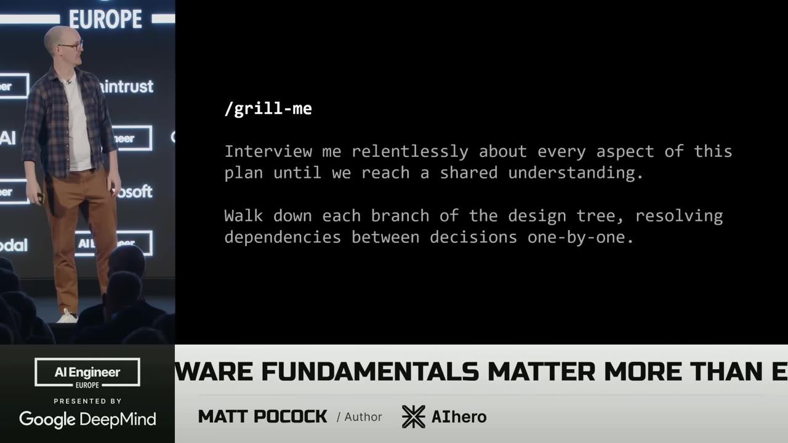
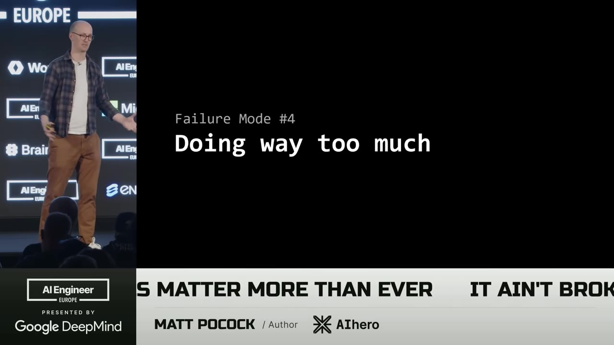
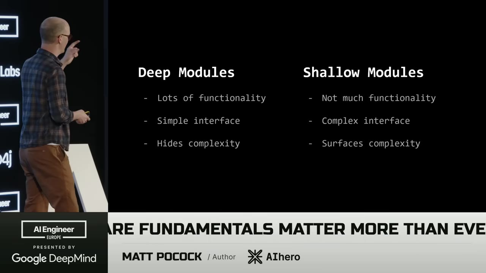
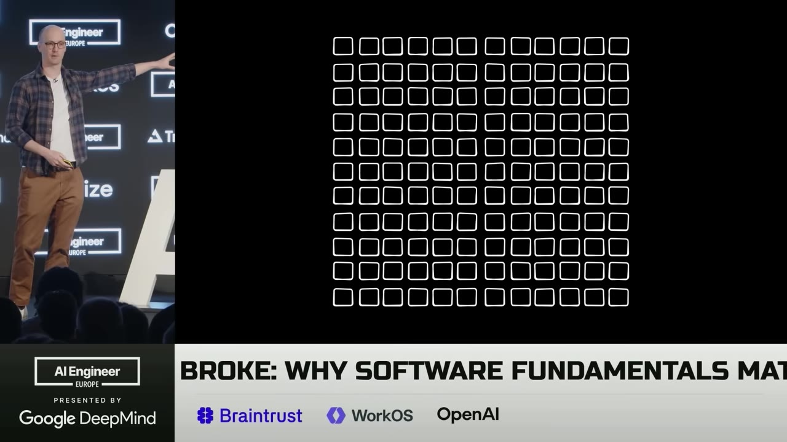
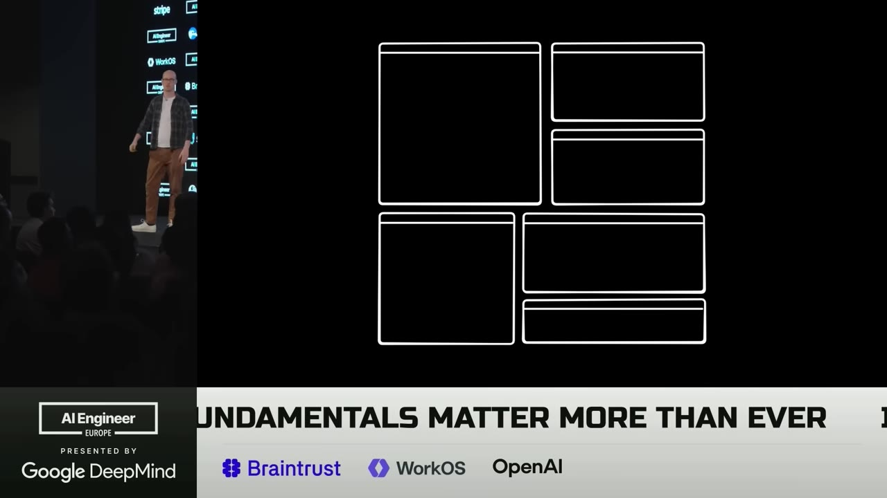
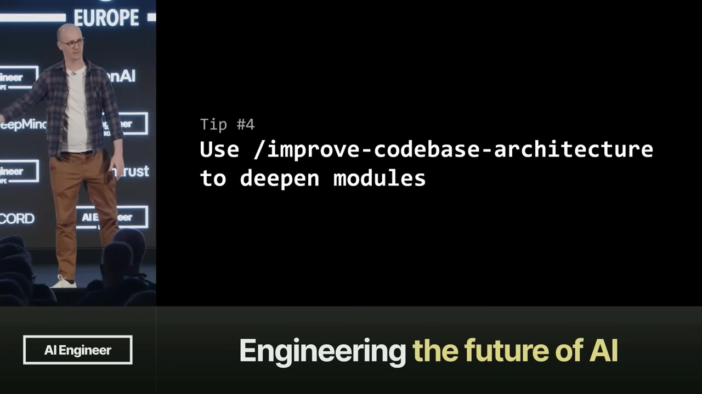
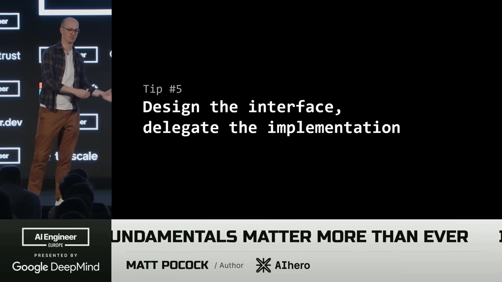
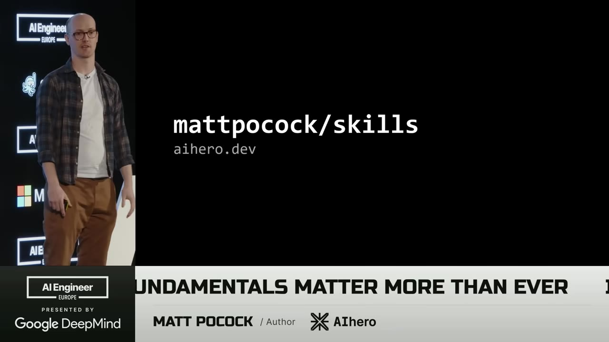

The specs-to-code movement promises to let you write an AI that generates and manages code while you stay at the strategic level. Matt Pocock tried it — and found that bad code is now the most expensive it's ever been.
Watch on YouTubeMatt Pocock opened his talk at AI Engineer with a direct message for engineers who worry their skills are obsolete: software fundamentals matter more than ever. He tested the specs-to-code movement firsthand — write a spec, run the compiler, iterate on the spec while ignoring the code. The result? Each iteration produced worse code. By the third pass, it was garbage.
The idea that you can just keep running the compiler and ignore the code is "vibe coding by another name."

When the AI produces something you didn't want, the problem is a communication gap. Frederick Brooks called it the design concept — the invisible theory of what you're building that floats between you and your collaborator. It's not an asset you can write down. It's the shared understanding.
Pocock's fix is a skill called Grill Me: interview the AI relentlessly about every aspect of the plan until you both reach shared understanding. It asks 40-100 questions, turning the AI into an adversary that pushes back on every assumption. The resulting conversation becomes a requirements doc or issues — and the shared design concept is what made it work.
You don't really look at the code. You just change the spec, run the compiler again, and end up with more code.— Matt Pocock
You know the feeling: the AI keeps generating code, but it's not quite right. It's using too many words, going in circles, unable to land on what you need. Pocock compared this to working with domain experts who use terms you don't understand — a language gap between you.
The fix comes from Domain-Driven Design: a ubiquitous language. A shared markdown file of terms that both you and the AI use consistently. Scan your codebase for terminology, create tables of definitions, and force both sides to use the same words. The result: the AI thinks in a less verbose way, and the implementation aligns with what you planned.
It not only improves the planning, but it allows the AI to think in a less verbose way.— Matt Pocock
Feedback loops should catch this. Static types, browser access for front-end, automated tests. But the AI doesn't use feedback loops the way a veteran developer would. It produces huge amounts of code first, then thinks "oh, I should probably type-check that."
In The Pragmatic Programmer, this is outrunning your headlights: driving too fast because you can't see far enough. The rate of feedback is your speed limit. TDD forces small deliberate steps — write the test, make it pass, refactor.

Testing has always been hard. Every test requires decisions: how big a unit, what to mock, what behaviors matter. All these decisions are interdependent. But here's the insight: good codebases are easy to test. The better your codebase, the better your feedback loops, the better the AI performs.
John Ousterhout's answer: deep modules — relatively few large modules with simple interfaces that hide complexity, rather than shallow modules with complex interfaces that expose everything.

A codebase full of shallow modules looks like a grid of tiny little blobs. The AI has to navigate every single one, understand every dependency, and piece together what the code does. It's terrible for AI exploration — and for human understanding too.
The fix is concrete: explore the codebase, find related code, wrap it in a deep module with a simple interface. Test at the interface, verify using that interface, and the codebase rewards TDD.

The transformation is systematic. You explore the codebase looking for related code, then wrap it in a deep module with a clean interface on top. The implementation inside can stay complex — but the boundary is simple.


You're shipping more code than ever before. But you're also more tired than you've ever been in your development career. The codebase makes it harder for your brain because both you and the AI need to hold all that information in working memory.
Deep modules change this. You treat them as gray boxes: design the interface, don't review the implementation. You can do this for many modules in your app — not the finance layer, but the infrastructure, the utilities, the glue code. Test from the outside, verify the boundary, let the AI handle what's inside.

Kent Beck said it: invest in the design of the system every day. Specs-to-code is the opposite — we're divesting from design, getting rid of it. But AI is just a sergeant on the ground making code changes. You need to be the strategist.
That requires software fundamentals — the same ones we've been using for 20 years. The speaker's GitHub repo matt pocock/skills contains all the skills demonstrated in this talk.
